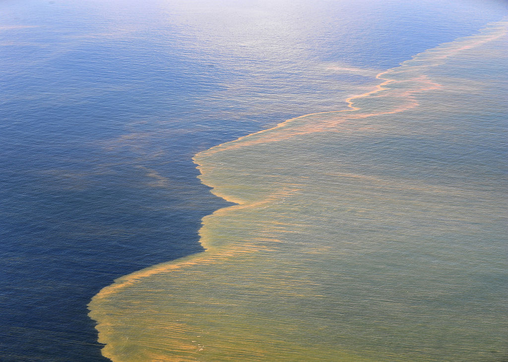

Gulf Oil Spill
Overview | Media | Author
This video highlights the devestation to the land and wildlife in and around the Gulf of Mexico.
Links to organizations to help with recovery:
Gulf Coast Fish and Wildlife Conservation office
Gulf Restoration
 Matt McCallum
Matt McCallum